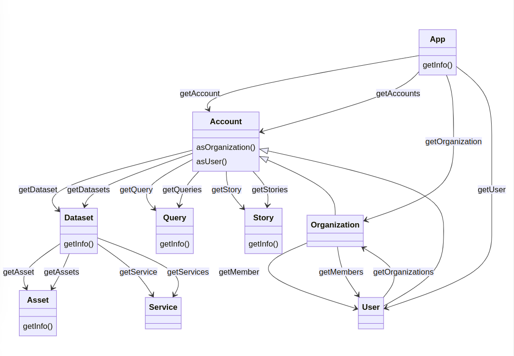

TriplyDB.js is the official programming library for interacting with TriplyDB. TriplyDB.js allows you to automate operations that would otherwise be performed in the TriplyDB GUI.
TriplyDB.js is implemented in TypeScript. TypeScript is a type-safe language that transpiles to JavaScript. This allows you to use TriplyDB.js in web browsers as well as on servers (using Node.js). TriplyDB.js is open source and its source code is published on GitHub.
Please contact support@triply.cc for questions and suggestions.
Overview¶
TriplyDB.js contains several classes, each with their own methods. The documentation for every method includes at least one code example. These code examples can be run by inserting them into the following overall script.
Notice that process.env.TOKEN picks up an API token that is stored in the environment variable called TOKEN. Follow the steps on this page to create a new API token in the TriplyDB GUI.
import App from '@triply/triplydb'
const triply = App.get({ token: process.env.TOKEN })
async function run() {
// This is where the code examples in this reference section should be placed.
}
run().catch(e => {
console.error(e)
process.exit(1)
})
process.on('uncaughtException', function (e) {
console.error('Uncaught exception', e)
process.exit(1)
})
process.on('unhandledRejection', (reason, p) => {
console.error('Unhandled Rejection at: Promise', p, 'reason:', reason)
process.exit(1)
})
The following sections document the various TriplyDB.js classes. Each class comes with its own methods. Classes are related through methods that connect them. For example, calling the getAccount method on a App object returns an Account object.
